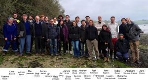

The Soft Matter Network brings together researchers working in Soft Materials across the University from nine departments, including Biochemistry, Cellular and Molecular Medicine, Earth Sciences, Engineering Maths and Physiology, Pharmacology and Neuroscience in addition to the traditional areas of Physics, Chemistry and Maths.
In time we hope this will lead to productive collaborations and provide opportunities for new research directions.
The network launched on Wed. 5th Dec 2018 (poster on the left).
Upcoming events and seminars:
Twisted topological tangles: or the knot theory of knitting
What are SMART physical scientists interested in?
Registration Link
Metamaterials and Topological Mechanics
Soft Matter Network Events
International Soft Matter Workshop IX, Cornwall, February 28-March 2 2019
Soft Matter of Life, Symposium, plenary talk by Stephen Mann, May 2019
Soft Matter in Geological Systems, Heidy Mader, late spring 2019
Water UK, John Russo, late spring 2019
Nucleation and Glassy Behaviour in Aerosols, Jonathan Reid, early summer 2019

People
Earth Sciences |
Engineering Mathematics |
Biochemistry |
|---|---|---|
| Kathy Cashman | Luca Giuggioli | Ross Anderson |
| Heidy Mader | Sabine Hauert | Dek Woolfson |
| Richard Brooker | Lucia Marucci |
Biology |
| James Drewitt | Jonathan Rossiter | Christos Ioannou |
Cellular and Molecular Medicine |
Mechanical Engineering |
Physiology, Pharmacology and Neuroscience |
|---|---|---|
| Adam Perriman | Valeska Ting | Chrissy Hammond |
University of Bath |
|
University of Exeter |
|---|---|---|
| Phil Salmon | Anita Zeidler | Dave Philips |
| Anton Souslov | Karen Edler |
Past Events
Room 3.34 Physics, Wednesday 23 January 2019, 2:00pm-3:00pm